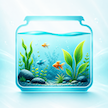

水质记录
记录温度、pH、氨氮、亚硝酸盐等关键指标，持续了解水质变化。

Aquarium Log把零散的观察和照料记录下来，在需要时快速回顾，让每一次调整都有迹可循。
记录温度、pH、氨氮、亚硝酸盐等关键指标，持续了解水质变化。
记录换水、清洁、设备维护和其他日常操作，避免遗漏重要步骤。
记录喂食时间和备注，帮助建立稳定的照料节奏。
用照片保存鱼缸状态，直观看到布置、生物和环境的长期变化。
围绕换水、喂食和维护建立提醒，让日常管理更加从容。
按时间回顾记录，发现水质、维护与鱼缸状态之间的变化关系。
Aquarium Log 以本地记录为核心。鱼缸档案、维护记录和照片用于提供 App 功能，不会在你未主动分享、导出或备份时上传到开发者服务器。
阅读隐私政策